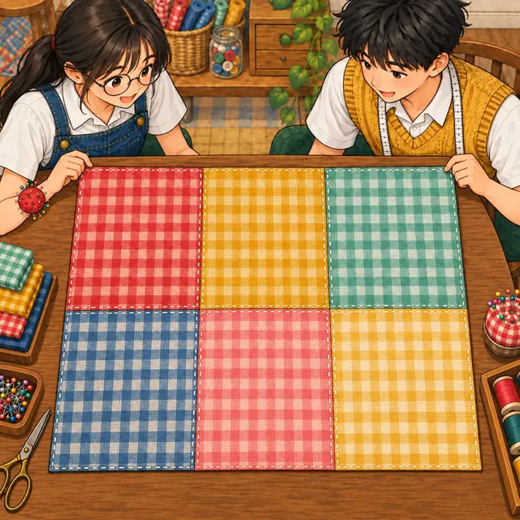
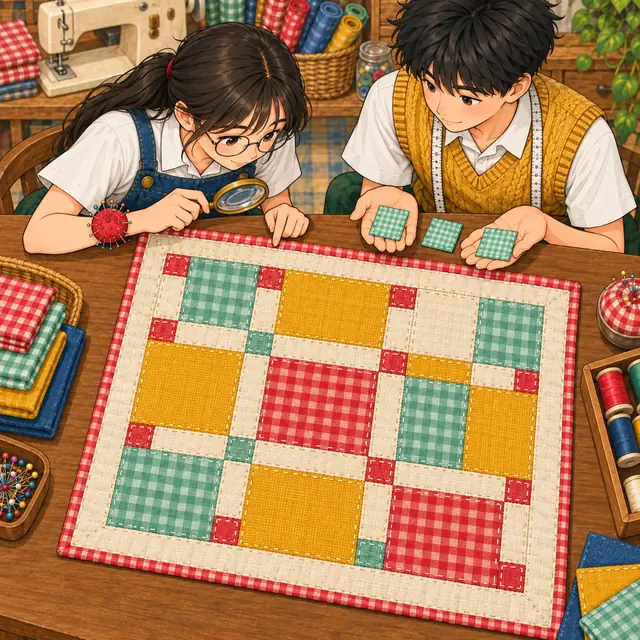
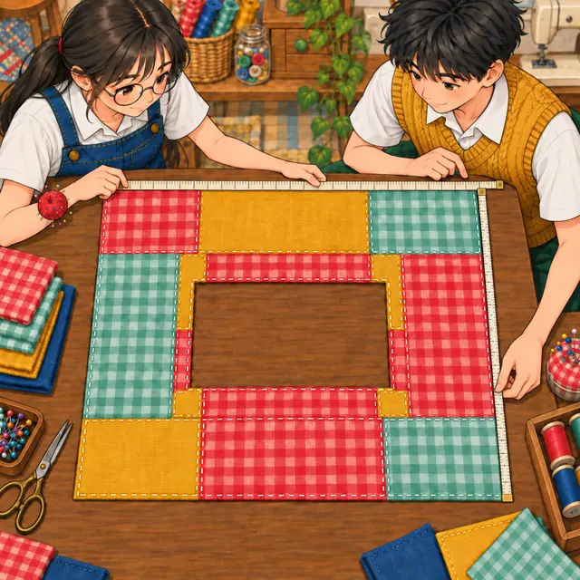

課前暖身漫畫：桌旗要做多長？
小禾有 \(3\) 塊大方布、\(7\) 條長條、\(2\) 塊小方布，總面積是 \(3x^2 + 7x + 2\)。她想把這些布全部用上，拼成一條寬 \(x + 2\) 的長方形桌旗。阿森問：「那長要多少？」已知面積和一邊，求另一邊——這一節學完多項式的除法，就能直接算出來。
重點 1：單項式的乘法——係數相乘、次數相加
重點整理與敘述
- 文字也是數：\(x\) 代表一個數，所以乘法的交換律與結合律照樣能用——係數放一組、\(x\) 放一組，各自相乘。
- 連續的 \(x\) 相乘：\(x \cdot x = x^2\)，\(x \cdot x^2 = x^3\)，數一數一共乘了幾個 \(x\) 就好。
- 例： \[\begin{aligned} & 3x \cdot 4x^2 \\ &= (3 \cdot 4)(x \cdot x^2) \\ &= 12x^3 \end{aligned}\]
- 負號跟著係數走：\((-4x) \cdot 2x = -8x^2\)。
- 平方就是自己乘自己，負號也要一起平方： \[\begin{aligned} & (-3x)^2 \\ &= (-3x)(-3x) \\ &= 9x^2 \end{aligned}\]
- 常見錯誤：\(2x \cdot 3x^2\) 是 \(6x^3\)，不是 \((2x)^3\)。\((2x)^3 = 8x^3\)，連係數也乘了三次。
視覺互動探索：單項式乘法機
調整兩個單項式的係數與次數。畫面把每個 \(x\) 都拆開，看係數怎麼相乘、\(x\) 的個數怎麼相加；切到「平方」看看負號平方之後變成什麼：
形成性評量 (單項式的乘法)
Q1. 計算 \((-6x) \cdot 7x^2\)，結果為何？
解析：答案為 C。係數相乘 \((-6) \times 7 = -42\)，次數相加 \(1 + 2 = 3\)，所以是 \(-42x^3\)。
A 錯：把係數相加了，\(-6 + 7 = 1\)。
B 錯：把次數相乘了，\(1 \times 2 = 2\)；\(x \cdot x^2\) 是三個 \(x\) 相乘。
D 錯：負數乘正數是負數。
Q2. 下列哪一個計算是正確的？
解析：答案為 A。係數 \(8 \times 1 = 8\)，次數 \(1 + 2 = 3\)。
B 錯：\((-6x)^2 = (-6x)(-6x) = 36x^2\)，負號也被平方了。
C 錯：\(6x \cdot 6x^2 = 36x^3\)，而 \((6x)^3 = 216x^3\)，兩者不相等。
D 錯：係數要相乘，\(7 \times 7 = 49\)，結果是 \(49x^2\)。
重點 2：單項式 × 多項式——分配律，每一項都要乘到
重點整理與敘述
- 分配律：\(a(b + c) = ab + ac\)。單項式乘以多項式，就是把單項式乘上括號裡的每一項，再把乘積相加。
- 例： \[\begin{aligned} & -4x(2x - 3) \\ &= (-4x)(2x) + (-4x)(-3) \\ &= -8x^2 + 12x \end{aligned}\]
- 正負號要一起乘：上式第二項是 \((-4x) \times (-3)\)，負負得正，是 \(+12x\)。
- 單項式寫在後面也一樣：\((5x + 1)(-2x) = -10x^2 - 2x\)。
- 常見錯誤：只乘第一項，寫成 \(-8x^2 - 3\)；括號裡有幾項，就要乘幾次。
視覺互動探索：分配律射線
調整單項式與括號裡各項的係數。左邊的單項式會射出箭頭，乘到括號裡的每一項；切到「只乘第一項」看看錯在哪裡：
形成性評量 (單項式 × 多項式)
Q3. 計算 \(-5x(6x^2 - 2x + 7)\)，結果為何？
解析：答案為 B。\(-5x\) 乘上每一項：
\[\begin{aligned} & (-5x)(6x^2) = -30x^3 \\ & (-5x)(-2x) = 10x^2 \\ & (-5x)(7) = -35x \end{aligned}\]
A 錯：只乘了第一項。
C 錯：\((-5x)(-2x)\) 負負得正，是 \(+10x^2\)。
D 錯：把 \(-5x\) 當成 \(5x\)，每一項的正負號都反了。
Q4. 計算 \((7x - 8)(-3x)\)，結果為何？
解析：答案為 D。\(7x \cdot (-3x) = -21x^2\)，\((-8) \cdot (-3x) = 24x\)，合起來是 \(-21x^2 + 24x\)。
A 錯：\((-8)(-3x)\) 負負得正，不是 \(-24x\)。
B 錯：\(7x \cdot (-3x)\) 是負的。
C 錯：\(-8\) 也要乘上 \(-3x\)，不能照抄。
重點 3：多項式 × 多項式——每一項乘每一項，再合併
重點整理與敘述
- 分配律用兩次：前面每一項都要乘上後面每一項。 \[\begin{aligned} & (a + b)(c + d) \\ &= ac + ad + bc + bd \end{aligned}\]
- 例： \[\begin{aligned} & (2x + 3)(x - 4) \\ &= 2x^2 - 8x + 3x - 12 \\ &= 2x^2 - 5x - 12 \end{aligned}\]
- 先數乘積的個數：兩項乘三項有 \(2 \times 3 = 6\) 個乘積，乘完再合併同類項： \[\begin{aligned} & (x + 2)(x^2 - 3x + 1) \\ &= x^3 - 3x^2 + x \\ &\quad + 2x^2 - 6x + 2 \\ &= x^3 - x^2 - 5x + 2 \end{aligned}\]

視覺互動探索：乘法格子布
左邊是一次式的每一項，上面是另一個多項式的每一項，格子裡是兩項的乘積。同顏色的格子是同類項，加起來就合併完成：
形成性評量 (多項式 × 多項式)
Q5. 計算 \((3x - 7)(-2x + 6)\)，結果為何？
解析：答案為 A。四個乘積：
\[\begin{aligned} & -6x^2 + 18x + 14x - 42 \\ &= -6x^2 + 32x - 42 \end{aligned}\]
B 錯：\((-7)(-2x)\) 是 \(+14x\)，寫成 \(-14x\) 才會得到 \(18x - 14x = 4x\)。
C 錯：只乘了頭頭、尾尾，漏掉中間兩個乘積。
D 錯：\((-7) \times 6 = -42\)，不是 \(+42\)。
Q6. 將 \((x^2 - 6x + 7)(4x - 1)\) 展開並化簡後，\(x^2\) 項的係數是多少？
解析：答案為 C。乘出 \(x^2\) 的只有兩組：\(x^2 \cdot (-1) = -x^2\) 與 \((-6x)(4x) = -24x^2\)，合併得 \(-25x^2\)。
A 錯：漏了 \(x^2 \cdot (-1)\)。
B 錯：漏了 \((-6x)(4x)\)。
D 錯：把 \((-6x)(4x)\) 算成 \(+24x^2\)，\(24 - 1 = 23\)。
重點 4：直式乘法——同類項對齊，缺項補 \(0\)
重點整理與敘述
- 直式的寫法：兩個多項式都按降冪排好，用下面那個式子的每一項去乘上面整個式子，每乘一次寫一列，同類項上下對齊，最後逐欄相加。
- 缺項補 \(0\)：上面的式子缺了某一項，要補上 \(0\)（或留空位），乘出來的各列才對得齊。下面是 \((x^2 - 4)(2x + 3)\)：
- 兩種順序都可以：上面是「由最高次項開始」（先乘 \(2x\)）；也可以「由常數項開始」（先乘 \(3\)），只要同類項對齊，結果一樣。
- 不補 \(0\) 會怎樣：\(x^2 - 4\) 若直接寫成兩格，\(-4\) 會跑到 \(x\) 那一欄，乘出來的 \(-8x\) 和 \(3x^2\) 就擠進同一欄，加不下去。
視覺互動探索：直式乘法台
選一題，切換「由最高次項開始／由常數項開始」，再比較「補 0 對齊」和「不補 0、直接靠右排」——有缺項的題目，不補 0 會出現擠錯欄的紅色問號：
形成性評量 (直式乘法與缺項)
Q7. 計算 \((4x^2 - 3)(-x + 2)\)，結果為何？
解析：答案為 B。把 \(4x^2 - 3\) 寫成 \(4x^2 + 0x - 3\)：
\[\begin{aligned} & 4x^2 \cdot (-x) = -4x^3 \\ & 4x^2 \cdot 2 = 8x^2 \\ & (-3)(-x) = 3x \\ & (-3) \cdot 2 = -6 \end{aligned}\]
A 錯：\((-3)(-x)\) 負負得正，是 \(+3x\)。
C 錯：漏了 \((-3)(-x)\) 這個乘積。
D 錯：\(4x^2 \cdot (-x)\) 是負的。
Q8. 將 \((6x^2 + 5)(x - 8)\) 展開並化簡後，\(x\) 項的係數是多少？
解析：答案為 D。補上缺項 \(6x^2 + 0x + 5\)，乘開得
\[ 6x^3 - 48x^2 + 5x - 40 \]
乘出 \(x\) 的只有 \(5 \cdot x = 5x\)（\(0x \cdot (-8)\) 是 \(0\)）。
A 錯：\(-48\) 是 \(x^2\) 項的係數。
B 錯：\(-40\) 是常數項。
C 錯：第一個式子缺 \(x\) 項，不代表乘開後也沒有 \(x\) 項。
重點 5：利用乘法公式——把 \(3x\) 整個看成 \(a\)
重點整理與敘述
- 先認出 \(a\) 和 \(b\)：\((2x + 5)^2\) 把 \(2x\) 看成 \(a\)、\(5\) 看成 \(b\)： \[\begin{aligned} & (2x)^2 + 2 \cdot 2x \cdot 5 + 5^2 \\ &= 4x^2 + 20x + 25 \end{aligned}\]
- \(a\) 要整個平方：\((2x)^2 = 4x^2\)，不是 \(2x^2\)。
- 差的平方：\((3x - 2)^2 = 9x^2 - 12x + 4\)。
- 平方差：\((5x + 3)(5x - 3) = 25x^2 - 9\)，中間項一正一負抵消了。
- 前後對調也一樣： \[\begin{aligned} (b - a)^2 &= [-(a - b)]^2 \\ &= (a - b)^2 \end{aligned}\] 所以 \((2 - 3x)^2\) 和 \((3x - 2)^2\) 相等。
視覺互動探索：公式代換機
選一個公式，調整 \(x\) 的係數 \(p\) 與常數 \(q\)。畫面先標出 \(a\)、\(b\) 各是什麼，再一步步代進公式；下方列出這組數字最容易犯的錯：
形成性評量 (利用乘法公式)
Q9. 利用乘法公式計算 \((7x - 3)^2\)，結果為何？
解析：答案為 C。把 \(7x\) 看成 \(a\)、\(3\) 看成 \(b\)：
\[\begin{aligned} & (7x)^2 - 2 \cdot 7x \cdot 3 + 3^2 \\ &= 49x^2 - 42x + 9 \end{aligned}\]
A 錯：漏了中間項 \(-2ab\)，而且 \((a - b)^2\) 的最後一項是 \(+b^2\)。
B 錯：\((7x)^2 = 49x^2\)，係數 \(7\) 也要平方。
D 錯：中間項要乘 \(2\)，是 \(2 \cdot 7x \cdot 3 = 42x\)。
Q10. 下列哪一個式子與 \((4x - 9)^2\) 相等？
解析：答案為 A。\(9 - 4x = -(4x - 9)\)，平方之後負號消失：
\[\begin{aligned} & (9 - 4x)^2 \\ &= (4x - 9)^2 \\ &= 16x^2 - 72x + 81 \end{aligned}\]
B 錯：前面多了一個負號，是 \(-16x^2 + 72x - 81\)。
C 錯：\((4x + 9)^2 = 16x^2 + 72x + 81\)，中間項的符號不同。
D 錯：那是 \((4x + 9)(4x - 9)\) 的結果。
重點 6：單項式的除法——係數相除、次數相減
重點整理與敘述
- 除法是乘法的反運算：因為 \(3x^2 \cdot 4x = 12x^3\)，所以 \(12x^3 \div 4x = 3x^2\)。
- 寫成分數再約分：分子、分母同時約掉相同的數與 \(x\)： \[\begin{aligned} & 12x^3 \div 4x \\ &= \frac{12 \cdot x \cdot x \cdot x}{4 \cdot x} \\ &= 3x^2 \end{aligned}\]
- 商可以是分數係數：\(9x^2 \div 6x = \frac{3}{2}x\)。
- 次數相同時 \(x\) 全部約掉：\(-10x^2 \div 4x^2 = -\frac{5}{2}\)，商是常數。
- 括號可以省略：除式的係數是正的時，\((8x^2) \div (2x)\) 習慣寫成 \(8x^2 \div 2x\)，意思一樣是「除以 \(2x\)」。
視覺互動探索：約分刀
調整被除式與除式的係數、次數。上面把它寫成分數，約掉的 \(x\) 會被劃掉；下面分成係數與 \(x\) 兩部分算，最後乘回去驗算：
形成性評量 (單項式的除法)
Q11. 計算 \((-28x^3) \div 7x\)，結果為何？
解析：答案為 D。係數 \((-28) \div 7 = -4\)，次數 \(3 - 1 = 2\)，商是 \(-4x^2\)。驗算：\(-4x^2 \cdot 7x = -28x^3\)。
A 錯：分母的 \(x\) 沒有約掉，次數沒減。
B 錯：負數除以正數是負數。
C 錯：係數要相除，不是相減。
Q12. 計算 \(20x^2 \div (-15x^2)\)，結果為何？
解析：答案為 B。係數 \(20 \div (-15) = -\frac{4}{3}\)；\(x^2 \div x^2\) 次數相減是 \(0\)，\(x\) 全部約掉，商是常數 \(-\frac{4}{3}\)。
A 錯：次數相同，\(x\) 要全部約掉。
C 錯：正數除以負數是負數。
D 錯：把除式與被除式倒過來除了。
重點 7：多項式 ÷ 單項式——算到餘式的次數比除式小才停
重點整理與敘述
- 四個名詞：仿照數的除法，在「\(A\) 除以 \(B\)」裡，\(A\) 是被除式、\(B\) 是除式，算出來的是商式，剩下的是餘式。
- 直式除法：被除式按降冪排列，用它的最高次項除以除式，得到商的一項；乘回去寫在下面，上減下；再對剩下的式子重複。以 \((6x^2 - 9x + 4) \div 3x\) 為例： \[\begin{aligned} & 6x^2 \div 3x = 2x \\ & \text{剩下 } {-9x} + 4 \\ & -9x \div 3x = -3 \\ & \text{剩下 } 4 \end{aligned}\] 商式是 \(2x - 3\)，餘式是 \(4\)。
- 除式是 \(x^2\) 的單項式時：\((5x^2 + 3x) \div x^2\) 只能商 \(5\)，剩下的 \(3x\) 次數是 \(1\)，已經比 \(2\) 小，所以餘式是 \(3x\)，不必再除。
- 能整除時也可以約分：\(\frac{4x^2 + 6x}{2x} = 2x + 3\)，每一項都約掉 \(2x\)。
視覺互動探索：長除法慢動作（÷ 單項式）
調整被除式與除式，用「上一步／下一步」一步一步看。顏色對應四個名詞：被除式、除式、商式、餘式；切換除式是 \(kx\) 或 \(kx^2\)，看看什麼時候該停：
形成性評量 (多項式 ÷ 單項式)
Q13. 求 \((18x^2 + 12x - 7) \div 6x\) 的商式與餘式。
解析：答案為 A。\(18x^2 \div 6x = 3x\)，乘回去減掉後剩 \(12x - 7\)；\(12x \div 6x = 2\)，再減掉後剩 \(-7\)。\(-7\) 的次數 \(0\) 比除式 \(6x\) 的次數 \(1\) 小，停止。
B 錯：餘式是被除式剩下的 \(-7\)，負號不能丟。
C 錯：\(-7\) 無法再被 \(6x\) 除，它就是餘式，這題沒有整除。
D 錯：\(x\) 的次數要相減，\(18x^2 \div 6x\) 是 \(3x\)，不是 \(3x^2\)。
Q14. 計算 \((10x^2 + 7x) \div 5x^2\)，餘式是多少？
解析：答案為 C。\(10x^2 \div 5x^2 = 2\)，\(2 \cdot 5x^2 = 10x^2\)，減掉後剩 \(7x\)。\(7x\) 的次數 \(1\) 比除式 \(5x^2\) 的次數 \(2\) 小，停止，所以商式 \(2\)、餘式 \(7x\)。
A 錯：剩下的 \(7x\) 不是 \(0\)，沒有整除。
B 錯：餘式是 \(7x\)，\(x\) 不能丟掉。
D 錯：那是把 \(7x\) 再除以 \(5x\) 的結果；但除式是 \(5x^2\)，\(7x\) 的次數已經比它小，不能再除。
重點 8：除式為一次式——上減下每一項變號，缺項補 \(0\)
重點整理與敘述
- 一輪四個動作：① 最高次項相除，得到商的一項；② 這一項乘上整個除式，寫在下面；③ 上減下，下面那一列每一項都要變號；④ 剩下的式子次數還不比除式小，就再來一輪。
- 例：\((3x^2 - 7x + 5) \div (x - 2)\) \[\begin{aligned} & 3x^2 \div x = 3x \\ & 3x(x - 2) = 3x^2 - 6x \\ & \text{剩下 } {-x} + 5 \\ & -x \div x = -1 \\ & -1 \cdot (x - 2) = -x + 2 \\ & \text{剩下 } 3 \end{aligned}\] 商式 \(3x - 1\)，餘式 \(3\)。除式是一次式，餘式一定是常數。
- 缺項補 \(0\)：\((2x^2 - 9) \div (x + 3)\) 要寫成 \(2x^2 + 0x - 9\)，才不會把 \(-9\) 放進 \(x\) 那一欄。算出來商式 \(2x - 6\)、餘式 \(9\)。
- 整除求未知數：若 \(x^2 - 5x + m\) 能被 \(x - 2\) 整除，照樣做長除法，最後剩下 \(m - 6\)，整除表示 \(m - 6 = 0\)，所以 \(m = 6\)。
視覺互動探索：長除法慢動作（÷ 一次式）
調整被除式與除式 \(px + q\)，一步一步看長除法。把 \(x\) 項係數調成 \(0\) 看缺項怎麼補；有餘式時，畫面會告訴你常數項要改成多少才能整除：
形成性評量 (除式為一次式)
Q15. 求 \((2x^2 + 9x - 4) \div (x + 4)\) 的商式與餘式。
解析：答案為 B。
\[\begin{aligned} & 2x(x + 4) = 2x^2 + 8x \\ & \text{剩下 } x - 4 \\ & 1 \cdot (x + 4) = x + 4 \\ & \text{剩下 } {-4} - 4 = -8 \end{aligned}\]
A 錯：最後一步上減下時 \(+4\) 沒有變號，算成 \(-4 + 4 = 0\)。
C 錯：第一步上減下時 \(+8x\) 沒有變號，算成 \(9x + 8x = 17x\)，後面就跟著錯。
D 錯：剩下的 \(x - 4\) 是一次式，和除式一樣是一次，還要再除一次才能停。
Q16. 已知 \(6x^2 + 7x + m\) 能被 \(2x + 3\) 整除，則 \(m\) 是多少？
解析：答案為 D。做長除法：
\[\begin{aligned} & 3x(2x + 3) = 6x^2 + 9x \\ & \text{剩下 } {-2x} + m \\ & -1 \cdot (2x + 3) = -2x - 3 \\ & \text{剩下 } m + 3 \end{aligned}\]
整除表示餘式為 \(0\)：\(m + 3 = 0\)，\(m = -3\)。
A 錯：最後一步 \(-3\) 沒有變號，得到 \(m - 3 = 0\)。
B、C 錯：代回去餘式 \(m + 3\) 分別是 \(-6\)、\(12\)，都不是 \(0\)。
重點 9：除式為二次式——商是常數，餘式可能是一次式
重點整理與敘述
- 二次式 ÷ 二次式只除一次：最高次項的係數相除，商式是一個常數；乘回去減掉之後，剩下的式子最多是一次，次數已經比 \(2\) 小，停止。
- 例：\((6x^2 - x + 4) \div (2x^2 + 3x - 1)\) \[\begin{aligned} & 6x^2 \div 2x^2 = 3 \\ & 3(2x^2 + 3x - 1) \\ &\quad = 6x^2 + 9x - 3 \\ & \text{剩下 } {-10x} + 7 \end{aligned}\] 商式 \(3\)，餘式 \(-10x + 7\)。
- 商與餘式可以有分數係數：\((3x^2 + 2x) \div (2x^2 - x + 1)\) 的商式是 \(\frac{3}{2}\)，餘式是 \(\frac{7}{2}x - \frac{3}{2}\)。
- 除式也要降冪：除式寫成 \(4 - 3x + x^2\) 時，先排成 \(x^2 - 3x + 4\) 再除；缺項一樣補 \(0\)。
視覺互動探索：二次 ÷ 二次，一步就停
調整被除式與除式的係數。不管怎麼調，商都只有一個常數，餘式的次數都比 \(2\) 小；把除式的 \(x\) 項調成 \(0\)，看缺項怎麼補：
形成性評量 (除式為二次式)
Q17. 求 \((10x^2 - 3x + 7) \div (2x^2 + x - 1)\) 的商式與餘式。
解析：答案為 A。\(10x^2 \div 2x^2 = 5\)，\(5(2x^2 + x - 1) = 10x^2 + 5x - 5\)，上減下：
\[\begin{aligned} & -3x - 5x = -8x \\ & 7 - (-5) = 12 \end{aligned}\]
B 錯：下面那一列整列沒有變號，算成 \(-3x + 5x\)、\(7 + (-5)\)。
C 錯：常數那一欄沒有變號，算成 \(7 + (-5) = 2\)。
D 錯：減反了，用下面減上面。
Q18. 某個多項式除以 \(x^2 - 3x + 2\)，下列哪一個不可能是它的餘式？
解析：答案為 D。除式是二次式，餘式的次數一定比 \(2\) 小。\(2x^2 + 5\) 是二次式，表示還可以再除一次（商再加 \(2\)），除法還沒做完。
A 可能：整除時餘式為 \(0\)。
B 可能：常數的次數是 \(0\)，比 \(2\) 小。
C 可能：一次式的次數 \(1\) 比 \(2\) 小。
重點 10：求被除式——被除式 ＝ 商式 × 除式 ＋ 餘式
重點整理與敘述
- 從整數除法想起：\(47 \div 6\) 的商是 \(7\)、餘數是 \(5\)，可以寫成 \(47 = 7 \times 6 + 5\)。
- 多項式也一樣：\((2x^2 - 3x + 7) \div (x - 2)\) 的商式是 \(2x + 1\)、餘式是 \(9\)，可以寫成 \[\begin{aligned} & 2x^2 - 3x + 7 \\ &= (2x + 1)(x - 2) + 9 \end{aligned}\]
- 求被除式：若 \(A \div (x - 4)\) 的商式是 \(2x^2 - 1\)、餘式是 \(5\)，則 \[\begin{aligned} A &= (2x^2 - 1)(x - 4) + 5 \\ &= 2x^3 - 8x^2 - x + 4 + 5 \\ &= 2x^3 - 8x^2 - x + 9 \end{aligned}\]
- 別忘了加餘式：只算商式 × 除式，少的就是餘式那一塊。
- 餘式的次數要比除式小：除式是一次式，餘式只能是常數；除式是二次式，餘式可以是一次式。
視覺互動探索：被除式組裝台
自己決定除式、商式、餘式，組出被除式；最下面一行把組出來的式子真的除回去驗算。切換除式是一次式或二次式，看看餘式能有多高的次數：
形成性評量 (求被除式)
Q19. 多項式 \(A\) 除以 \(x - 7\) 的商式為 \(2x^2 + 3\)，餘式為 \(-7\)，則 \(A\) 是多少？
解析：答案為 C。
\[\begin{aligned} A &= (2x^2 + 3)(x - 7) + (-7) \\ &= 2x^3 - 14x^2 + 3x - 21 - 7 \\ &= 2x^3 - 14x^2 + 3x - 28 \end{aligned}\]
A 錯：只算了商式 × 除式，忘了加餘式。
B 錯：把除式當成 \(x + 7\)：\((2x^2 + 3)(x + 7) - 7\)。
D 錯：把餘式 \(-7\) 減掉了，算成 \(-21 + 7\)。
Q20. 多項式 \(F\) 除以多項式 \(G\)，得商式 \(Q\)、餘式 \(R\)。那麼 \(F + G\) 除以 \(G\)，商式與餘式各是什麼？
解析：答案為 B。由 \(F = QG + R\)：
\[\begin{aligned} F + G &= QG + R + G \\ &= (Q + 1)G + R \end{aligned}\]
\(R\) 的次數本來就比 \(G\) 小，所以商式 \(Q + 1\)、餘式 \(R\)。
A 錯：\(R + G\) 的次數和 \(G\) 一樣高，不能當餘式，還能再除。
C 錯：餘式沒有多出 \(1\)，多出來的 \(G\) 剛好再除一次。
D 錯：多了一個 \(G\)，商式就要多 \(1\)。
重點 11：求除式——先減掉餘式，再除以商式
重點整理與敘述
- 由關係式移項：被除式 ＝ 商式 × 除式 ＋ 餘式，所以「商式 × 除式」就是「被除式 − 餘式」。
- 例：\(6x^2 + x - 16\) 除以多項式 \(B\)，商式 \(2x + 3\)、餘式 \(-4\)。先減掉餘式： \[\begin{aligned} & (6x^2 + x - 16) - (-4) \\ &= 6x^2 + x - 12 \end{aligned}\] 再除以商式： \[\begin{aligned} B &= (6x^2 + x - 12) \\ &\quad \div (2x + 3) \\ &= 3x - 4 \end{aligned}\]
- 減完一定整除：被除式減掉餘式後，剛好是商式 × 除式，所以這次的長除法餘式一定是 \(0\)；除不盡就代表前面算錯了。
- 「除」與「除以」：「\(A\) 除以 \(B\)」是 \(A \div B\)；「\(A\) 除 \(B\)」是 \(B \div A\)。讀題時先分清楚誰是被除式。

視覺互動探索：除式偵探
被除式就是桌上這堆布。先拿掉餘式那幾塊，剩下的排成一邊是商式的長方形，另一邊就是要找的除式。按「下一步」照順序做：
形成性評量 (求除式)
Q21. \(12x^2 - 5x - 5\) 除以多項式 \(B\)，得商式 \(3x + 1\)、餘式 \(-2\)，則 \(B\) 是多少？
解析：答案為 A。先減掉餘式，再除以商式：
\[\begin{aligned} & (12x^2 - 5x - 5) - (-2) \\ &= 12x^2 - 5x - 3 \\ B &= (12x^2 - 5x - 3) \\ &\quad \div (3x + 1) \\ &= 4x - 3 \end{aligned}\]
驗算：
\[\begin{aligned} & (3x + 1)(4x - 3) - 2 \\ &= 12x^2 - 5x - 5 \end{aligned}\]
B 錯：代回去
\[\begin{aligned} & (3x + 1)(4x + 3) - 2 \\ &= 12x^2 + 13x + 1 \end{aligned}\]
不是原來的被除式。
C 錯：\(3x + 1\) 是商式，不是除式。
D 錯：代回去
\[\begin{aligned} & (3x + 1)(4x - 1) - 2 \\ &= 12x^2 + x - 3 \end{aligned}\]
也對不上。
Q22. \(6x^2 + 5x - 1\) 除以多項式 \(B\)，得商式 \(2\)、餘式 \(x + 5\)，則 \(B\) 是多少？
解析：答案為 C。
\[\begin{aligned} & (6x^2 + 5x - 1) - (x + 5) \\ &= 6x^2 + 4x - 6 \\ B &= (6x^2 + 4x - 6) \div 2 \\ &= 3x^2 + 2x - 3 \end{aligned}\]
驗算：
\[\begin{aligned} & 2(3x^2 + 2x - 3) + (x + 5) \\ &= 6x^2 + 5x - 1 \end{aligned}\]
而且餘式 \(x + 5\) 是一次，比除式的二次小。
A 錯：把餘式加上去了，\((6x^2 + 6x + 4) \div 2\)。
B 錯：要除以商式 \(2\)，不是乘以 \(2\)。
D 錯：忘了先減掉餘式，直接 \((6x^2 + 5x - 1) \div 2\)。
重點 12：四則運算——先乘方、再乘除、後加減
重點整理與敘述
- 規則和數一樣：由左到右、括號內先算、先乘方、再乘除、最後加減。
- 減號後面的乘積要整組加括號：先把乘積算出來放進括號，再去括號，括號裡每一項都變號。
- 例： \[\begin{aligned} & 2(x - 3)^2 - (x + 1)(x - 4) \\ &= 2(x^2 - 6x + 9) \\ &\quad - (x^2 - 3x - 4) \\ &= 2x^2 - 12x + 18 \\ &\quad - x^2 + 3x + 4 \\ &= x^2 - 9x + 22 \end{aligned}\]
- 常見錯誤：寫成 \(2x^2 - 12x + 18 - x^2 - 3x - 4\)，只有第一項變號，後面兩項的號都錯了。
視覺互動探索：四則運算步驟機
選一題，按「下一步」照順序算：先乘方、再乘法，乘積整組放進括號，最後去括號合併。紅色那一步是最容易出錯的地方：
形成性評量 (多項式的四則運算)
Q23. 計算 \((x + 5)^2 - 2(x + 3)(x - 1)\)，結果為何？
解析：答案為 B。
\[\begin{aligned} & (x^2 + 10x + 25) \\ &\quad - 2(x^2 + 2x - 3) \\ &= x^2 + 10x + 25 \\ &\quad - 2x^2 - 4x + 6 \\ &= -x^2 + 6x + 31 \end{aligned}\]
A 錯：減號後只有第一項變號，算成 \(-2x^2 + 4x - 6\)。
C 錯：把 \((x + 5)^2\) 寫成 \(x^2 + 25\)，漏了中間項 \(10x\)。
D 錯：把中間的減號當成加號了。
Q24. 小禾計算 \((2x + 3)^2 - (x - 2)(x + 5)\) 的過程如下。她從第幾步開始算錯？ \[\begin{aligned} \text{①} \; &= (4x^2 + 12x + 9) \\ &\quad - (x^2 + 3x - 10) \\ \text{②} \; &= 4x^2 + 12x + 9 \\ &\quad - x^2 + 3x - 10 \\ \text{③} \; &= 3x^2 + 15x - 1 \end{aligned}\]
解析：答案為 B。第 ① 步正確：\((2x + 3)^2 = 4x^2 + 12x + 9\)，\((x - 2)(x + 5) = x^2 + 3x - 10\)。第 ② 步去括號時，減號後面每一項都要變號，應該是
\[ 4x^2 + 12x + 9 - x^2 - 3x + 10 \]
她只變了第一項。正確答案是 \(3x^2 + 9x + 19\)。
C 錯：第 ③ 步照第 ② 步合併並沒有算錯，錯是從第 ② 步來的。
重點 13：多項式的應用——面積、周長與梯形求高
重點整理與敘述
- 先寫關係式，再代入多項式：長方形面積 ＝ 長 × 寬、周長 ＝ (長 ＋ 寬) × 2，把多項式代進去，用前面學的乘法化簡。
- 周長：長 \(3x + 2\)、寬 \(x + 5\) 的長方形，周長是 \[\begin{aligned} & [(3x + 2) + (x + 5)] \times 2 \\ &= (4x + 7) \times 2 = 8x + 14 \end{aligned}\]
- 挖掉一塊：剩下的面積 ＝ 大的 − 小的，小的那塊乘開後要整組加括號再減。
- 小路平移：田裡縱橫各有一條寬 \(x\) 的小路時，把小路推到邊上，剩下的稻田就拼成一整塊長方形，長、寬各少 \(x\)。
- 梯形求高要用除法：梯形面積 ＝ (上底 ＋ 下底) × 高 ÷ 2，所以 \[ \text{高} = \text{面積} \times 2 \div (\text{上底} + \text{下底}) \]
- 代數字驗算：算完可以代一個 \(x\)（例如 \(x = 2\)）進去，用數字直接算面積，兩邊一樣才放心。

視覺互動探索：拼布工作台應用
選一種情境，拖動 \(x\) 的值：圖形會跟著變大變小，右上角把數字代進去，和多項式的答案對照，兩邊永遠一樣：
形成性評量 (多項式的應用)
Q25. 一塊長 \(5x + 2\)、寬 \(3x + 1\) 的長方形布，剪掉一塊長 \(2x\)、寬 \(x + 1\) 的長方形後，剩下的面積是多少？
解析：答案為 A。大的減小的：
\[\begin{aligned} & (5x + 2)(3x + 1) - 2x(x + 1) \\ &= (15x^2 + 11x + 2) \\ &\quad - (2x^2 + 2x) \\ &= 13x^2 + 9x + 2 \end{aligned}\]
B 錯：減號後只有 \(2x^2\) 變號，\(2x\) 沒有變號。
C 錯：剪掉要用減的，這是把兩塊加起來。
D 錯：\((5x + 2)(3x + 1)\) 漏了中間兩個乘積，寫成 \(15x^2 + 2\)。
Q26. 一個梯形的上底是 \(2x + 1\)、下底是 \(4x + 5\)，面積是 \(3x^2 + 12x + 9\)。這個梯形的高是多少？
解析：答案為 D。上底加下底是 \(6x + 6\)：
\[\begin{aligned} \text{高} &= (3x^2 + 12x + 9) \times 2 \\ &\quad \div (6x + 6) \\ &= (6x^2 + 24x + 18) \\ &\quad \div (6x + 6) \\ &= x + 3 \end{aligned}\]
A 錯：忘了乘 \(2\)，直接用面積除以 \(6x + 6\)。
B 錯：把「乘 \(2\)」做成「除以 \(2\)」。
C 錯：乘了兩次 \(2\)。
小節總結與核心回顧
乘除運算速查表
- 單項式乘法：係數相乘、次數相加；平方時負號也要平方。
- 分配律：單項式乘到括號裡的每一項，正負號一起乘。
- 多項式相乘：每一項乘每一項再合併；\(m\) 次式 × \(n\) 次式是 \((m + n)\) 次式。
- 直式乘法：同類項對齊，缺項補 \(0\)。
- 乘法公式：把 \(px\) 整個看成 \(a\)，\((px)^2 = p^2x^2\)。
- 單項式除法：係數相除、次數相減，商可以有分數係數。
- 多項式 ÷ 單項式：算到餘式的次數比除式小，或餘式為 \(0\)（整除）。
- 除以一次式：上減下每一項變號；餘式是常數。
- 除以二次式：二次 ÷ 二次只商一個常數，餘式最多一次。
- 求被除式：被除式 ＝ 商式 × 除式 ＋ 餘式。
- 求除式：除式 ＝（被除式 − 餘式）÷ 商式。
- 四則運算：先乘方、再乘除、後加減，減號後的乘積整組加括號。
- 應用：寫出面積、周長的關係式再代入；梯形求高要用除法。
回到拼布工坊：桌旗要做多長？
面積除以寬
小禾的布總面積是 \(3x^2 + 7x + 2\)，桌旗的寬是 \(x + 2\)。長方形的長 ＝ 面積 ÷ 寬： \[ (3x^2 + 7x + 2) \div (x + 2) = 3x + 1 \] 餘式是 \(0\)，表示 \(x + 2\) 整除 \(3x^2 + 7x + 2\)——布剛好全部用完，拼成一條長 \(3x + 1\)、寬 \(x + 2\) 的桌旗。
驗算
反過來乘回去：\((3x + 1)(x + 2) = 3x^2 + 7x + 2\)，正好是原來的面積。乘法和除法互為反運算，算完除法，用乘法驗算最放心。
下一章預告
這一節是把兩個式子「乘起來」或「除開來」。第 3 章〈因式分解〉要反過來，把 \(3x^2 + 7x + 2\) 這種式子直接拆成 \((3x + 1)(x + 2)\) 這樣的乘積。